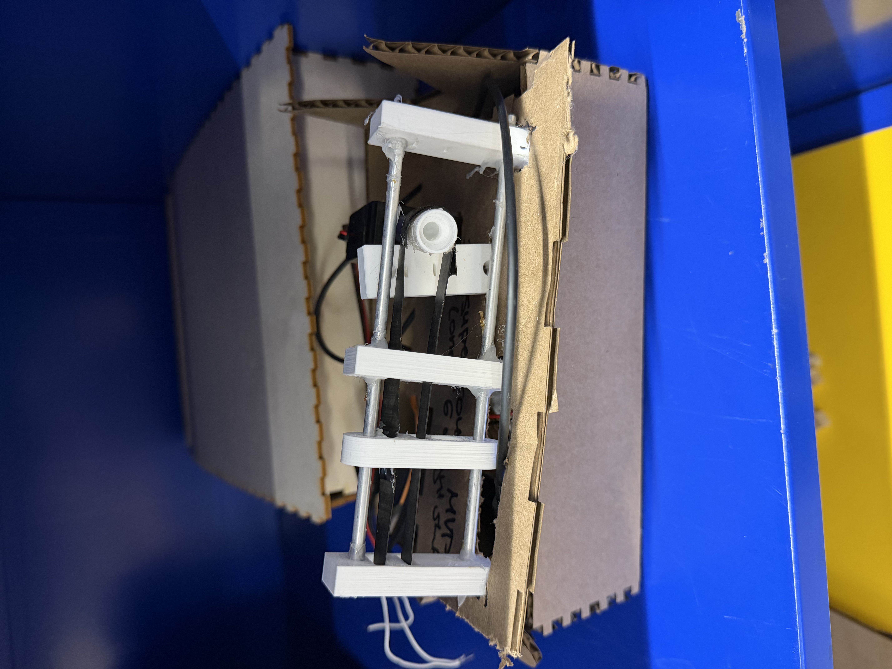
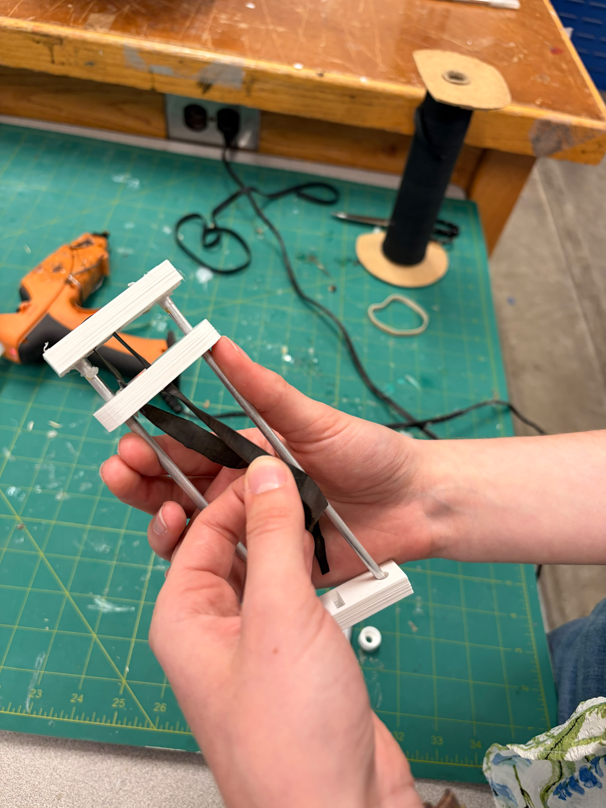

Week 7: Outputs
I have to figure out how to make a weight shifter, so that I can make the ball self propell. My initial plan was to make an XYZ pulley-type system, and so I attempted to make one of the pulleys. I first modeled something with gears, and then I looked at the Prusa and realized that that was a better design, so I did that. I'm not that used to 3d printing, and so it took me a decent amount of time to get models I was happy with -- which is why I ultimately just decided to focus on making one of the 6 axises. It didn't work, but I think if I made the servo connected better, it might -- I'll have to try. Nathan also suggested attaching a weight to the end of a smaller servo -- that might work, and I'll try it out!



Obviously, this is ridiculously clunky at the moment. I'll slim it down, and try other methods of moving weights around.
I also started working on the software side that it would need. I haven't gone far enough into it yet for it to be a problem if I scrap this design, but here's the code. I had a bunch of fun playing with the physics of it (most of which is still in my notebok)